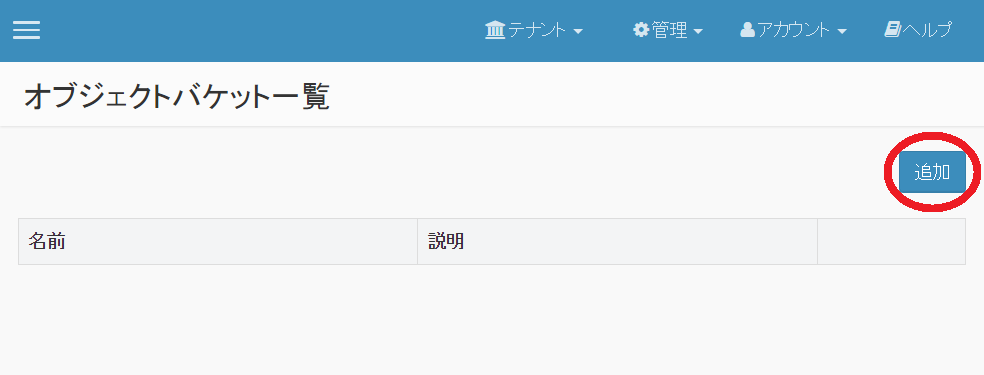
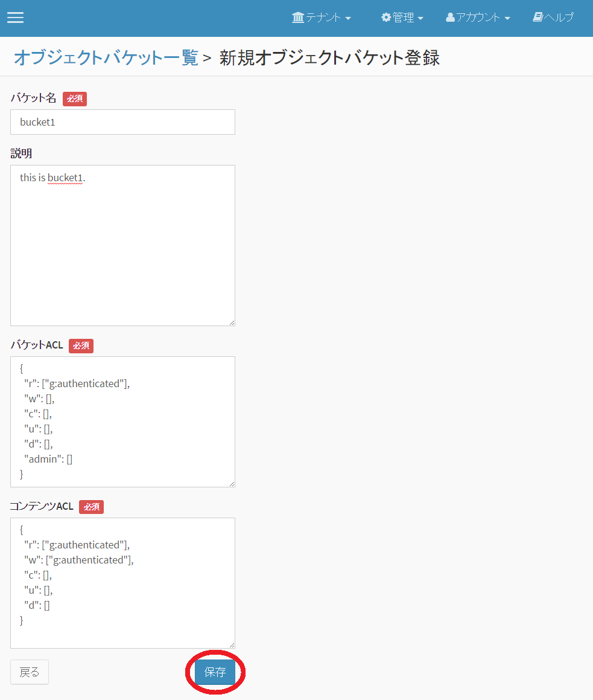
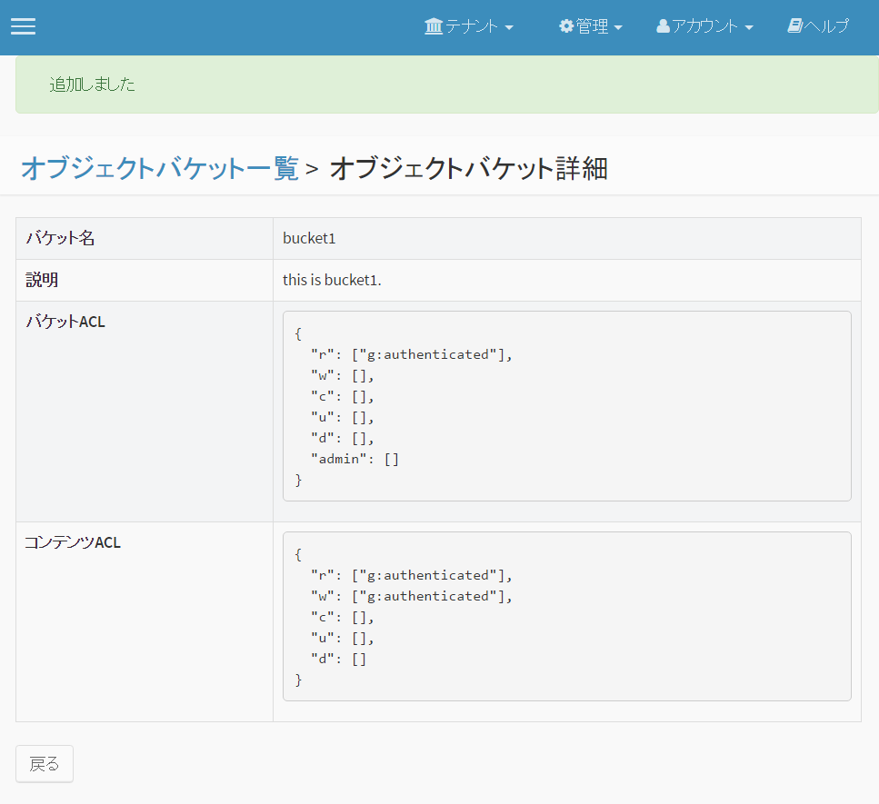
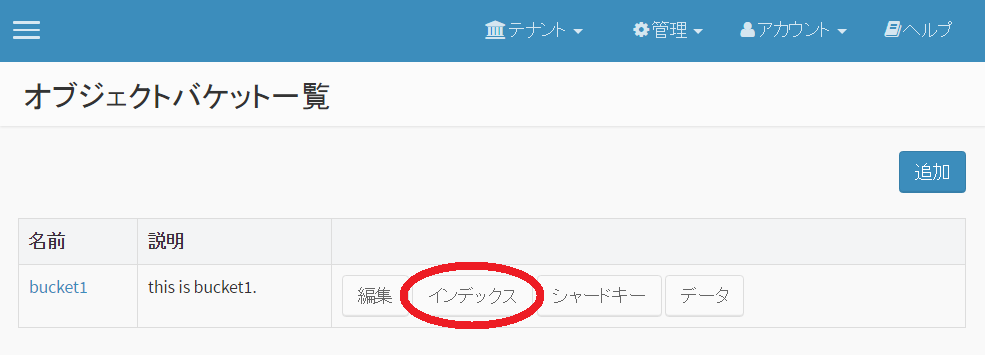
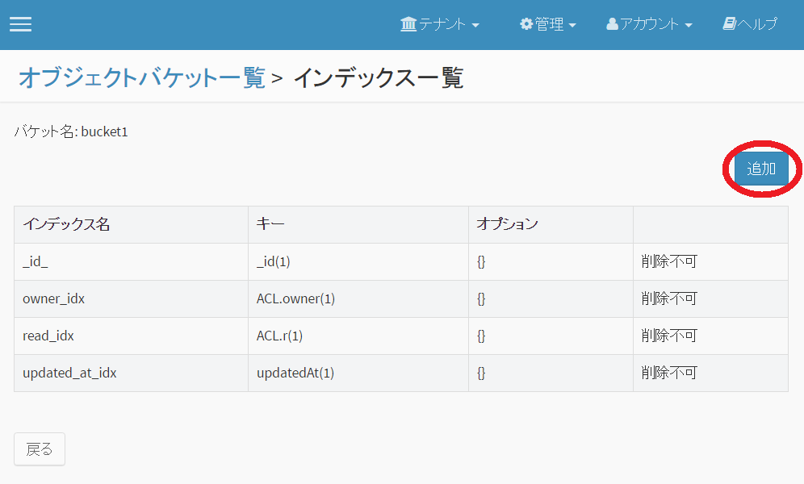
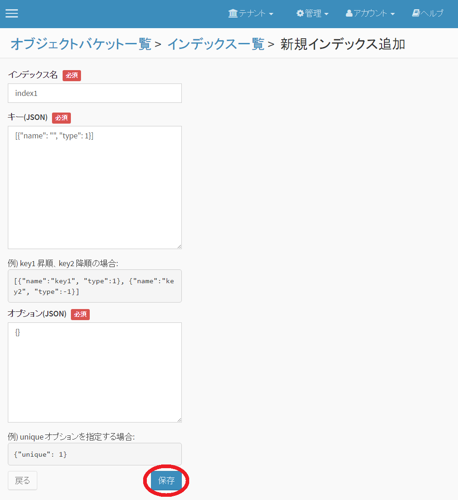
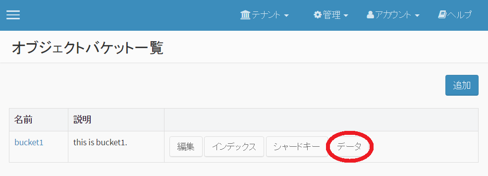
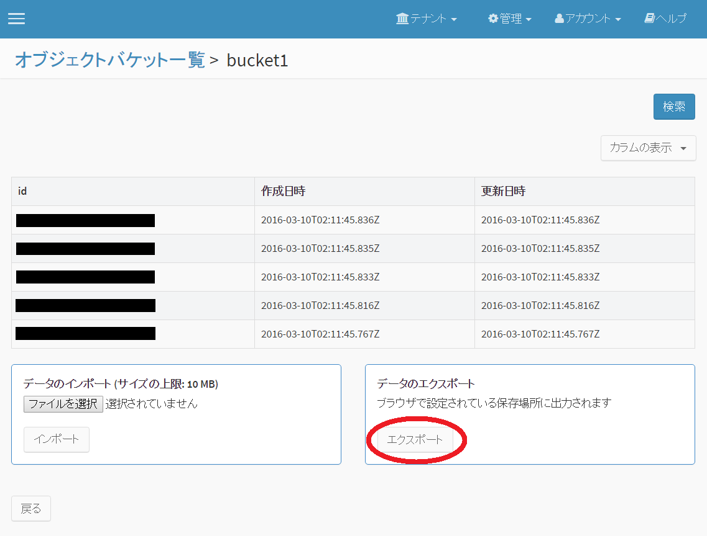

4.5. オブジェクトバケット管理¶
オブジェクトバケットの追加、編集、削除、インデックス設定、シャードキー設定を行うことができます。 また、データのインポートエクスポートを行うことができます。
オブジェクトバケットの追加¶
例として、オブジェクトバケットの追加方法を説明します。
オブジェクトバケット一覧画面で、「追加」を選択してください。
{kind=link}
新規オブジェクトバケット登録画面が表示されますので、「バケット名」、「説明」(任意)、「バケットACL」、「コンテンツACL」を入力し、「保存」を選択してください。(「バケットACL」と「コンテンツACL」にはデフォルト値が入っています)
{kind=link}
これでテナントにオブジェクトバケットが追加されました。
追加したオブジェクトバケットの情報が表示されます。
{kind=link}
オブジェクトバケットの編集、削除¶
テナント内のオブジェクトバケットの編集、削除は、オブジェクトバケット一覧画面で「編集」を選択後、表示されるオブジェクトバケット編集画面で実施できます。
インデックスの作成¶
指定フィールドへのインデックス作成方法を説明します。
オブジェクトバケット一覧画面で、「インデックス」を選択してください。
{kind=link}
インデックス一覧画面が表示されますので、「追加」を選択してください。
{kind=link}
新規インデックス追加画面で「インデックス名」「キー」「オプション」を入力し、「保存」を選択してください。
{kind=link}
注意
インデックス名に使用可能な文字は1バイト英数字、アンダースコアのみです。 また、インデックス名の文字数は1文字～40文字に制限されます。
サポートするインデックスタイプおよびオプション¶
サポートするインデックスのタイプは以下の通りです。
| インデックスタイプ | 入力例 |
|---|---|
| 昇順 | {"name":"key1", "type":1} または key1 |
| 降順 | {"name":"key1", "type":-1} または -key1 |
| ハッシュ | {"name":"key1", "type":"hashed"} |
サポートするオプションは以下の通りです。
| オプション | 入力例 | 備考 |
|---|---|---|
| unique | {"unique": true} | ハッシュインデックスには設定不可 |
MongoDB で提供されている上記以外のタイプ・オプションも設定可能ですが、動作保証範囲外となります。
注釈
詳細は、 MongoDB DocumentationのIndexes を参照して下さい。
データ管理機能¶
データのエクスポート¶
次に、オブジェクトバケット内のデータのエクスポートを説明します。
オブジェクトバケット一覧画面で対象バケットの「データ」を選択します。
{kind=link}
オブジェクトデータ一覧が表示されますので、「エクスポート」を選択するとデータがJSON形式でエクスポートされます。ファイルは、「"オブジェクトバケット名".json」となります。
{kind=link}
JSON形式のデータをインポートすることもできます。
{kind=link}
{kind=link}
{kind=link}
クエリプランナー¶
オブジェクトバケットに対するクエリ実行時の実行計画を確認することができます。
オブジェクトバケット一覧画面で「クエリプランナー」を選択するとクエリプランナー画面に移動します。
クエリ式を入力することで、クエリプランナーの結果(explain結果)を確認することができます。
- 結果の読み方については、 Explain Results を参照してください。
- ACL チェックのための演算子がクエリ式に自動追加されます。実行されるクエリは、プランナー結果の parsedQuery 内に格納されています。